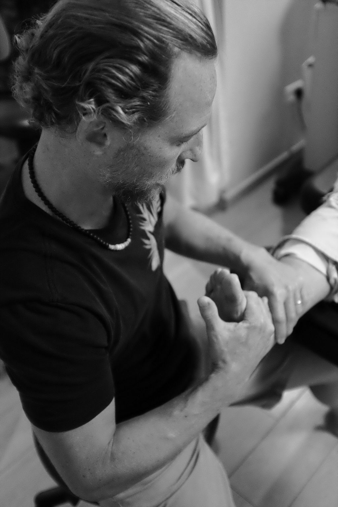
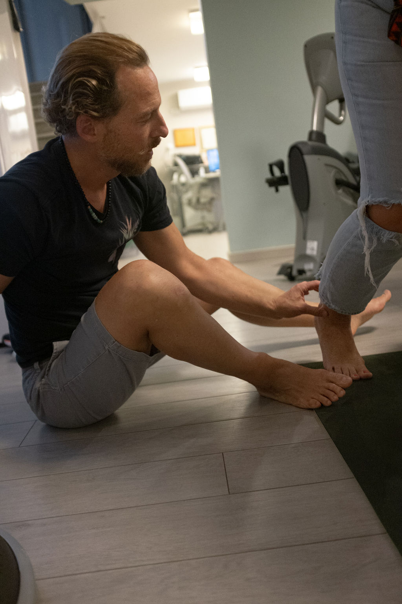
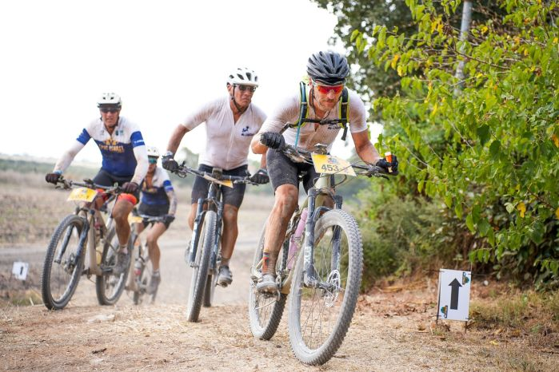

גלריית הקליניקה והטיפולים בלייב

ד"ר דוד גרבר - פיזיוטרפיסט ספורט DPT

אבחון ביומכני אישי 1-על-1

קליניקת פרימיום בזיכרון יעקב

שיקום רוכבי אופניים ואימון עומסים

טיפול ידני מנואלי ודיקור יבש

מיטת מתיחה, לייזר ואולטרה-סאונד

אבחון דריכה והתאמת מדרסים

הסמכות והשתלמויות מקצועיות 2025
ד"ר דוד גרבר - פיזיוטרפיסט ספורט DPT
אבחון ביומכני אישי 1-על-1
קליניקת פרימיום בזיכרון יעקב
שיקום רוכבי אופניים ואימון עומסים